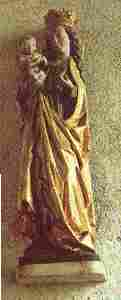
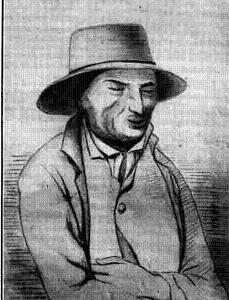

Kentel Ar Beorien
Ton(Barzhaz Breizh, 1867)
1. Sant Per da Jezuz a lare: Eo ta la ri ta la ri ta la ri ta Sant Per da Jezuz a lare: "Da Vreizh Izel it, va Doue!". 2. "Per, da Vreizh Izel me ned an: Eo ta la ri ta la ri ta la ri ta "Per, da Vreizh Izel me ned an: "Tud divac'hagn, Per, ha dour skanv!". 3. Sant Yann a lare d'ar Werc'hez: "Da Vreizh Izel it, Itron gaezh!" "Da Vreizh Izel ez an warc'hoazh, Pedet on gant va mignon braz". 4. Hag antronoz e Plouigno Oa klevet ar c'hanaouennoù Oa klevet ar soner o son E ti eun ozhac'h a feson. 5. E ti eun ozhac'h pinvidig Hag en mad ouzh pep reuzeudig: Seul vui ma rae aluzunoù, Seul vui e kreske e vadoù.
|
|
6. Hag eur mab hepken e devoa Eur paotr dibilh a driwec'h vloaz; Hag en e benn 'devoa laket Ober evitan eur banked. 7. Eur banked kaer 'vit e eured, E oll gerent e-doa pedet, Ha pedet gant e oll gerent Ar beorien, mignon'd ar Zent. 8. Pa oant ouzh taol divezhat-mat, Erru ur baourez divezhat; Hag hi truilhek ha diarc'hen. Ganti he mab ouzh he c'herc'henn. 9. -'Vidoc'h da vezañ divezhat, Paourez gaezh, bezit deuet mat.- Dre an dorn e oe kemeret Da dal an tan e oe kaset. 10. Da dal an tan da repuiñ, He mabik kerkoulz evelti; Hag a c'hoarzhe ouzh tud an ti ; Nemet na brize ket debriñ.
|
|
11. - Debrit hag evit a gerfet, Dirazhoc'h, gant grad, eo lakaet. - Me n'am eus na naon na sec'hed, Nemet ur garantez barfet. 12. Nemet ur garantez wirion, Pa'z on pedet a wir galon, Pa'z on pedet a galon vat, Da zonet da eured ho mab. 13. Mil vad a ra d'am c'halon gaezh Gwelet hoc'h holl gompagnunezh Mil vad a ra d'am mab Jezuz, Gwelet tud ker karantezuz. 14. Ned omp ket gant hini anavet, Met hini neus aluzennet. War an ti-mañ kant mil bennoz ! Kenavezo d'ar baradoz. 15. Ar gentel-mañ zo bet savet En neñv, e parrez an Drinded, Dindan ur bod boukedon roz A daol c'hwezh vat er baradoz.
|
 |
Carnet de collecte N°3, pages 79 et 80
|
BREZHONEK 1
Chanté par Margarit Pilliou (de Loqueffret) - [qui l'a] peut-être faite -, le 20 octobre 1863. a. 'Peus klevet penn kentañ ar bed . b. A oa ar Werc'hez benniget c. War an douar 'n-em ziskouezet ___ (2) d. Hi oa e-mesk ar gristenien e. Evit gallout holl o souten 4.1 Un nozvezh e parrez Plouigniaou 4.4 E ti un ozac’h à feson f. Ha reiñ d'ar re an aluzen (3) 4.1 E parrez Plouigniaou aliez g. Er park doa hini he anavet h. Nemet hini 'n-eus aluzennet. i. Neuze e teue ar Werc'hez (5) 5.3 Seul-vui e roe aluzennoù 5.4 Seul-vui e kreske a vadoù. (6) j. Bennoz, ya, mil bennoz Doue k. A oa diskennet warnezhe (an den-se) 6.1 Eñ ne devoa nemet ur mab 6.2 A oa oadet a bemzek vloaz 6.3 Lakaet a re en e speret 6.4 Da ober gantañ ur banked 7.1. Ur banked kaer en-deus aozet 7.2 E holl lignez en-deus pedet, l. Nemet ar Werc'hez venniget m. Met ar werc’hez en-deuz ankouet. 8.2 Degouet ur baourez 'toull an nor n. Hag eñ monet evit digor. p. 'N-em lakaat a re en orezon 12.2 Mont d’he fediñ a wir galon. 12.2 - Ho pediñ ran a wir galon! - 12.3 Mont d’he fediñ a galon-vat 12.4 Da zonet da euret he vap; 9.3 Dre an dorn e oa konduet. 9.4 Da dal an tan e oa kaset, 10.1 Da dal an tan da repuiñ, 10.2 He mabig bihan, koulz hag hi. 11.1 – Debrit, evit pezh a gerfet q. Gant gras Doue, deoc'h a vo roet, 11.2 Dirazoc’h gant gras vo lakaet. 11.3 – Me n’am-eus me na naon na sec’hed, 11.4 N'em-eus nemet ur volontez (garantez) parfet ; 13.1 Mil vad a ra d’am c'halon gaezh 13.2 Gwelet holl ho kompagnunezh. - __ 15.1. Ar werz-mañ a zo bet savet 15.2 En neñv ar palez an Dreinded 15.3 Dindan ur bod bokedoù roz 15.4 A daol c'hwezh vat ar baradoz. KLT gant Christian Souchon (c) 2021 |
BREZHONEK 2
Chanté par Margarit Pilliou (de Loqueffret) - [qui l'a] peut-être faite -, le 20 octobre 1863. a. Er penn kentañ dimeus ar bed, b. Ar Werc'hez Vari benniget c. Zo aliez 'n-em ziskouezet. (4) 5.1 Pinvidik a oa en efet 4.1 E parrez Plouignaou un nozvezh 5.1 E ti un ozac'h, e teuas 5.1 Pinvidik a oa en efet 4.4. E ti un ozac'h a feson 12.2 Hi a zeue a wir galon (7) 6.1 Nemet ur map eñ en-devoa 6.2 A oa oadet a bemzek vloaz 8.2. Degouet ur baourez toul an nor n. Hag eñ monet d'he digor. o. - Perak hoc'h-euz me ankouet? - |
TRADUCTION FRANCAISE
p. 79 Chanté par Marguerite Pilliou (de Loqueffret) - [qui l'a] peut-être faite -, le 20 octobre 1863. a. A l'aube du monde, sais-tu b. Que la Vierge sainte apparut? c. Quand en ce bas monde elle vint ___ (2) d. C'est pour se mêler aux chrétiens, e. Apporter à tous son soutien. 4.1 Un soir, au bourg de Plouigneau 4.4 C'est chez un maître comme il faut f. Qui faisait aux pauvres l'aumône (3) 4. Qu'elle entre. Elle y venait souvent , g. Inconnue de tous, par les champs.- h. Or je crois bien, cette nuit-là, i. Que, par mégarde, il l'oublia. (5) 5.3 L'aumône, plus il la faisait 5.4 Plus sa fortune grandiissait. (6) j. Et les bénédictions de Dieu k. (De lui faisaient) un homme heureux. 6.1 Il n'avait qu'un fils cependant 6.2 Un seul fils, âgé de quinze ans. 6.3 Et le maître avait décidé 6.4 D'organiser un grand banquet. 7.1 A ce banquet furent conviées 7.2 Bien des branches de sa lignée, l. Sauf la sainte Vierge Marie, m. La sainte Vierge qu'il oublie. 8.2 Or à la porte une pauvresse n. Arrive. D'ouvrir il s'empresse. p. Il récitait une oraison 12.2 Pour l'inviter il s'interrompt 12.2 - C'est de bon coeur que je vous prie! - 12.3 Et c'est vraiment de bon coeur qu'il 12.4 L'invite aux noces de son fils ; 9.3 Puis par la main il l'a menée 9.4 En face de la cheminée 10.1 Pour que le feu réconfortant 10.2 La réchauffe, elle et son enfant. o - Pourquoi m'avez-vous oubliée? - 11.1 – Mangez, buvez, tout votre saoûl q. C'est de bon coeur, tout est pour vous, 11.2 Tous ces mets qui vous sont servis. 11.3. – Je n'ai ni faim ni soif, ma foi, 11.4 Je n'ai qu'amour [volonté] parfait en moi ; 13.1 Ma pauvre âme exulte à la vue 13.2 De toute votre compagnie. - __ 15.1 Ce chant fut au Ciel composé, 15.2 Au palais de la Trinité 15.3 D'un buisson de roses en fleurs 15.4 Du paradis il a l'odeur Traduction Ch. Souchon (c) 2021 |
ENGLISH TRANSLATION
p. 79 Sung by Marguerite Pilliou (at Loqueffret) - [who] possibly composed it -, October 20, 1863. a. At the world's dawning, so I hear, b. The Holy Virgin did appear c. And when into this world she came, ___ (2) d. To mingle with Christians she claimed, e. She aimed to support everyone. 4.1 One evening, in Plouigneau town 4.4 She knocked at a rich master's door. f. Who used to give alms to the poor (3) 4 There she came, as she'd always done, g. Cutting through fields, to all unknown. - h. It happened that she was that night, i. A guest he had failed to invite. (5) 5.3 The more this man gave alms, the more 5.4 The wealth increased he had in store. (6) j. To him God's blessing had given k. All the things you may imagine. 6.1. But only one son, I was told 6.2 And he was now fifteen years old. 6.3. Now the master had decided 6.4 To give a sumptuous banquet. 7.1. He had, as you may imagine 7.2 Invited all his kith and kin, l. But not the Blessed Virgin Mary, m. He'd forgotten quite aimlessly 8.2. Now at the door a poor woman n. Knocks, and he hastens to open. p. He was reciting a prayer 12.2 He stopped and ran to invite her 12.2 - I kindly ask you to enter! - 12.3. He kindly asked her to come in 12.4 And join them in his son's wedding; 9.3. He gently led her by the hand 9.4 By the fireplace she took her stand. 10.1. Near the fire it was warm and mild, 10.2 She would warm up, so would her child. o - Tell me why did you forget me? - 11.1 - Now sit down, eat and drink your fill! q. You may have as much as you will, 11.2 Of all dishes served to you. 11.3 - Hungry or thirsty I won't be:, 11.4 I've only perfect love in me; 13.1 My heart rejoices at the mere 13.2 Sight of all of you gathered here. - __ 15.1 This song was made at heavenly 15.2 Place, the Palace of Trinity. 15.3 Underneath a rosebush so nice 15.4 Spreading perfumes of paradise. Translated by Ch. Souchon (c) 2021 |
Son an dud paour
("La belle qui fait la morte", Hanter-dro)
|
1. Ni 'n eus choazet ur vestrez,
2. Hon mestrezik a zo brav,
3. He zreid a zo feul ha skañv,
|
 Barzh dall Yan Guen (Saver ar zon, hervez Kervarker) |